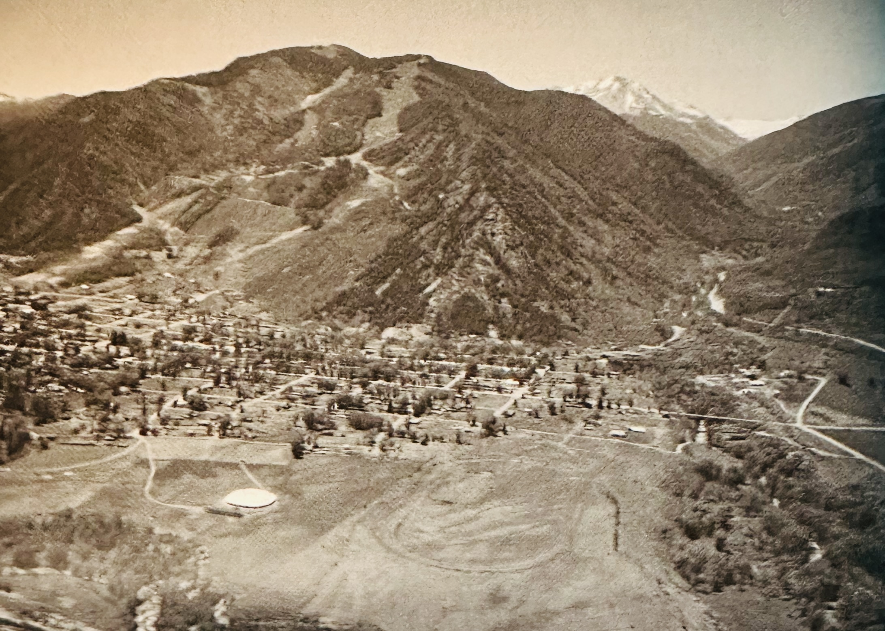
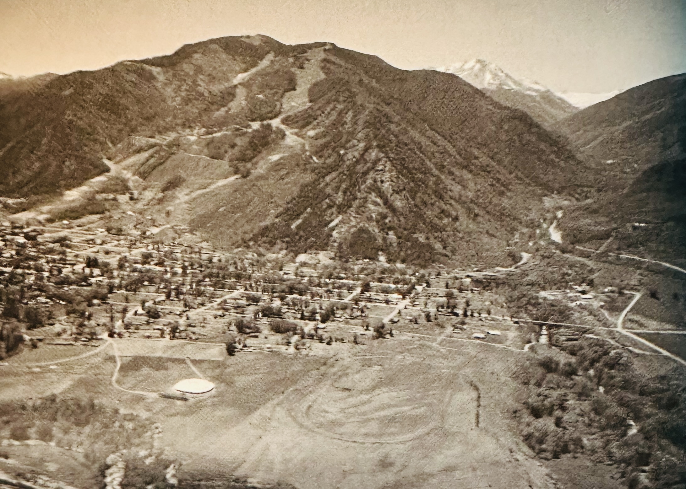

Please see our:
Reading materials
Below please find a mixed reading list: some are highly technical texts; others are focused on the Aspen Music Festival itself; there are youtube links to some of my favorite artists and recordings.
- The best way to understand The Aspen Music Festival is to visit The Resnick Center for Herbert Bayer Studies, an absolutely remarkable new building close to the Tent featuring the work and philosophy of Herbert Bayer. Bayer, a Bauhaus and International champion who feld the Nazis in WWII was enticed by Walter Paepcke and his wife Elizabeth to help implement their vision of Aspen as a special community organized around art and culture, or
Kulturstaat
. We will visit this place and I cannot recommend browsing the website too highly before we do so.
- The History of Western Music, by Grout, Palisca, Burkholder. I memorized this tome in preparation for my DMA entrance exam. Fantastic book.
- The Magic Mountain, by Thomas Mann. A more romantic general description of music ye will not find!
- The Grove's Dictionary of Western Music. This is the grand encyclopedia of classical music. You enter herein at your peril.
- The Aspen Program Book is released bi-weekly throughout the summer Festival, and contains concert information, performer bios, and fascinating information about your favorite works and composers, compiled by the AMFS Artistic team.
- The Aspen Times includes the "Festival Focus" news insert in its Monday edition throughout AMFS's summer Festival. "Festival Focus" features interviews with AMFS's performers, students, and artist-faculty, and offers readers an inside look at the Festival's upcoming events.
- For those intrepid souls who are interested in all things Aspen, Hunter S Thompson, he of
Hells Angels
fame ran for sheriff in 1967: you can read about that here. His first campaign promise was to rip up all city streets with jackhammers and sod the streets at once ... All public movement would be by foot and a fleet of bicycles, maintained by the city police force.
- This documentary on Sviatislav Richter is amazing: YouTube is truly a music treasure trove.
- Glenn Gould's 1955 Goldberg Variations: an incredible musical experience!
Aspen is delightfully small (see below Google map) - you can walk and ride buses anywhere. Get out those phones and feel free to wander! Great restaurants abound for every taste and budgetary approach.
The big red pin is Wagner Park which is right in the middle of town.

Aspen in 1949
The Tent in 1949
Who needs a ticket?
Gordon Hardy and Aaron Copland
Darius Milhaud and Olivier Messiaen
Stravinsky

Copland flying out
Rehearsal in the tent

Music school campus
In front of the Jerome Hotel

Music school campus
Lunch on the mall
In a white tux
Music student dorms

At the top of Independance Pass
Below please find a mixed reading list: some are highly technical texts; others are focused on the Aspen Music Festival itself; there are youtube links to some of my favorite artists and recordings.
- The best way to understand The Aspen Music Festival is to visit The Resnick Center for Herbert Bayer Studies, an absolutely remarkable new building close to the Tent featuring the work and philosophy of Herbert Bayer. Bayer, a Bauhaus and International champion who feld the Nazis in WWII was enticed by Walter Paepcke and his wife Elizabeth to help implement their vision of Aspen as a special community organized around art and culture, or
Kulturstaat
. We will visit this place and I cannot recommend browsing the website too highly before we do so. - The History of Western Music, by Grout, Palisca, Burkholder. I memorized this tome in preparation for my DMA entrance exam. Fantastic book.
- The Magic Mountain, by Thomas Mann. A more romantic general description of music ye will not find!
- The Grove's Dictionary of Western Music. This is the grand encyclopedia of classical music. You enter herein at your peril.
- The Aspen Program Book is released bi-weekly throughout the summer Festival, and contains concert information, performer bios, and fascinating information about your favorite works and composers, compiled by the AMFS Artistic team.
- The Aspen Times includes the "Festival Focus" news insert in its Monday edition throughout AMFS's summer Festival. "Festival Focus" features interviews with AMFS's performers, students, and artist-faculty, and offers readers an inside look at the Festival's upcoming events.
- For those intrepid souls who are interested in all things Aspen, Hunter S Thompson, he of
Hells Angels
fame ran for sheriff in 1967: you can read about that here. His first campaign promise was torip up all city streets with jackhammers and sod the streets at once ... All public movement would be by foot and a fleet of bicycles, maintained by the city police force.
- This documentary on Sviatislav Richter is amazing: YouTube is truly a music treasure trove.
- Glenn Gould's 1955 Goldberg Variations: an incredible musical experience!
Aspen is delightfully small (see below Google map) - you can walk and ride buses anywhere. Get out those phones and feel free to wander! Great restaurants abound for every taste and budgetary approach.
The big red pin is Wagner Park which is right in the middle of town.

Aspen in 1949